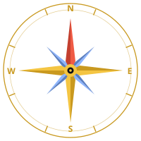

⚠️ Aucune récupération en cas d'oubli (il faut tout effacer). Barrière d'usage, pas un chiffrement.
| Heure | Type | Méthode | URL | Catégorie | Body ? | Statut |
|---|
Voici la liste exhaustive de toutes les URLs que l'app peut contacter :
Aucun POST, PUT, PATCH, DELETE, sendBeacon, WebSocket ou EventSource n'est jamais émis par l'app. Si un jour ça change, ce document sera mis à jour et la version bumpée.
tile.openstreetmap.org). Décoche la case « 🗺️ Vue OSM » dans la même section (ou passe en mode incognito) : l'app ne contacte plus que son propre serveur — le journal et F12 te le montrent.Content-Security-Policy. Le serveur Nginx demande au navigateur de bloquer toute connexion non whitelistée : seuls le site lui-même et le fond de carte OpenStreetMap sont autorisés.myktamap.fr
Cette garantie de sécurité et de non-télémétrie s'applique UNIQUEMENT au domaine officiel myktamap.fr.
Le code source de MyKTAMap est public (CC BY-NC-SA 4.0) et peut être copié, forké ou miroir par n'importe qui. Toute installation tierce — peu importe qu'elle se présente sous un autre nom, un autre domaine ou même qu'elle clame être « MyKTAMap » — peut contenir des modifications dont nous ne sommes pas responsables : tracking ajouté, exfiltration de données, code malveillant injecté. Nous n'avons aucun moyen de vérifier ce qui s'y passe.
Comment t'assurer que tu es sur le vrai site ? Vérifie l'URL dans la barre d'adresse de ton navigateur. Si elle ne commence pas par https://myktamap.fr, tout ce qui est écrit dans cette page ne te concerne pas — c'est une copie sur laquelle nous n'avons aucun contrôle.
La page complète de transparence (modèle technique, stockage local, position de l'auteur…) est dans docs/NETWORK_AUDIT.md :
(S'ouvre dans un nouvel onglet — c'est un fichier statique servi par le même Nginx que l'app.)